Ujjal Kr Dutta

I am a Senior Data Scientist at Myntra Designs, a leading fashion e-commerce platform. Prior to that I was a PhD candidate under the supervision of Dr C Chandra Sekhar, at the Department of Computer Science and Engineering, IIT Madras, Chennai, India. My PhD research topic was about Embedding Learning and Metric Learning with Limited Supervision (semi-supervised and unsupervised). The eventual intersection of my work towards Optimization on Riemannian Manifolds got me the opportunity to collaborate with Dr Mehrtash Harandi.
My ERDOS PATH reads as Ujjal Kr Dutta -> Mehrtash Harandi -> Richard Hartley -> Marc Kilgour -> Peter C. Fishburn -> Paul Erdos.
Recent news
- August 2020 Our paper on Unsupervised Deep Metric Learning got accepted in IEEE TAI.
- January 2020 Our paper got accepted in ICASSP 2020.
- November 2019 Our paper got accepted in AAAI 2020.
2020
|
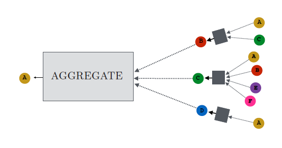
|
|
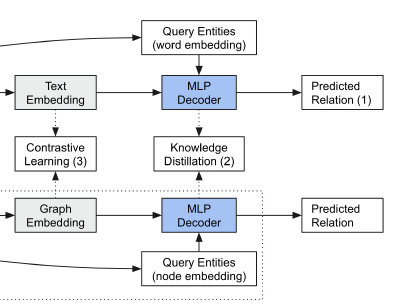
|
Distilling Structured Knowledge for Text-Based Relational Reasoning
Jin Dong, Marc-Antoine Rondeau, and William L. Hamilton Proceedings of EMNLP. 2020. |
|
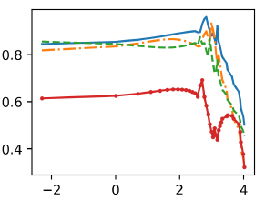
|
TeMP: Temporal Message Passing for Temporal Knowledge Graph Completion
Jiapeng Wu, Meng Cao, Jackie Chi Kit Cheung, and William L. Hamilton Proceedings of EMNLP. 2020. |
|
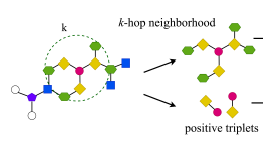
|
Structure Aware Negative Sampling in Knowledge Graphs
Kian Ahrabian, Aarash Feizi, Yasmin Salehi, William L. Hamilton, and Avishek Joey Bose Proceedings of EMNLP. 2020. |
|
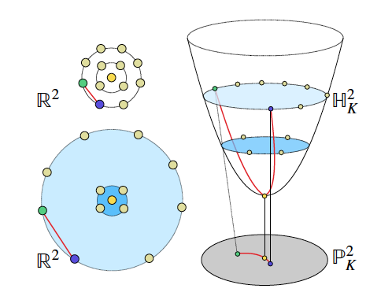
|
Latent Variable Modelling with Hyperbolic Normalizing Flows
Avishek Joey Bose, Ariella Smofsky, Renjie Liao, Prakash Panangaden, and William L. Hamilton Proceedings of ICML. 2020. pdf (arxiv) |
|
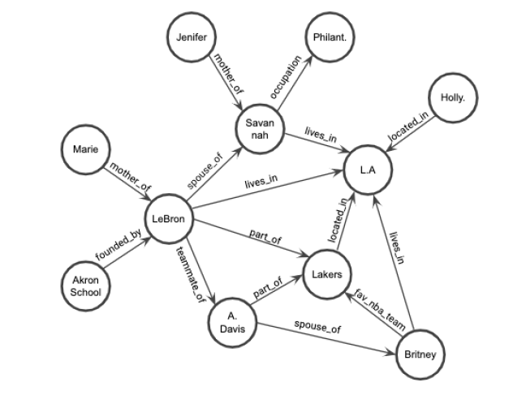
|
Inductive Relation Prediction by Subgraph Reasoning
Komal K. Teru, Etienne Denis, and William L. Hamilton Proceedings of ICML. 2020. |
|
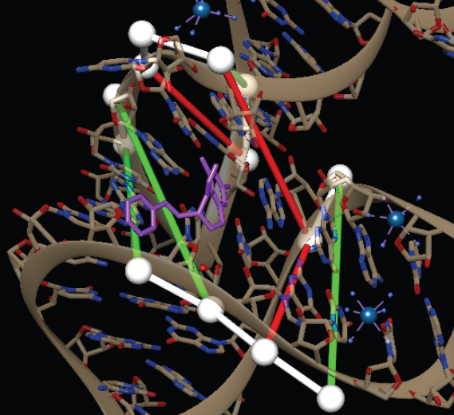
|
Augmented base pairing networks encode RNA-small molecule binding preferences
Carlos G. Oliver, Roman Gendron, Nicolas Moitessier, Vincent Mallet, Vladimir Reinharz, William L. Hamilton, Nicolas Moitessier, and Jérôme Waldispühl Nucleic Acids Research (NAR). 2020. pdf (biorxiv) |
|
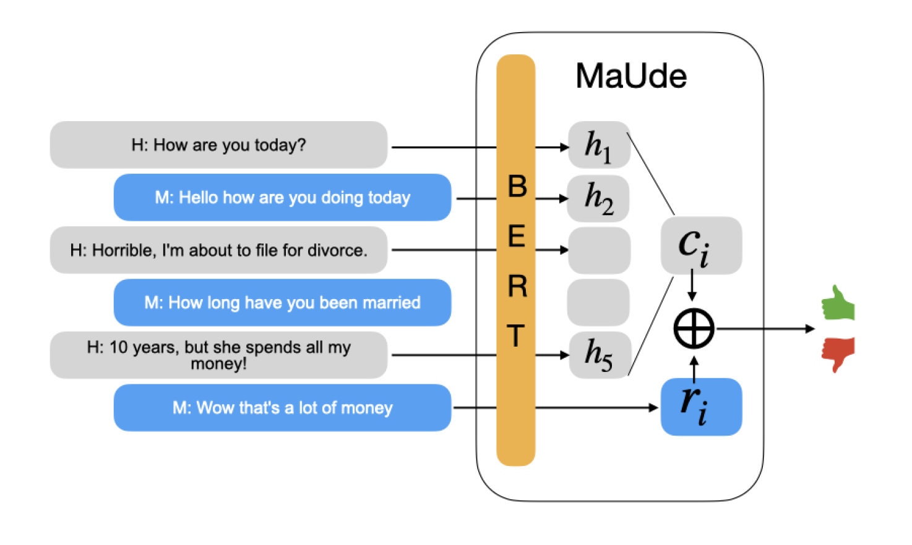
|
Learning an Unreferenced Metric for Online Dialogue Evaluation
Koustuv Sinha, Prasanna Parthasarathi, Jasmine Wang, Ryan Lowe, William L. Hamilton, and Joelle Pineau Proceedings of ACL. 2020. pdf (arxiv) |
|
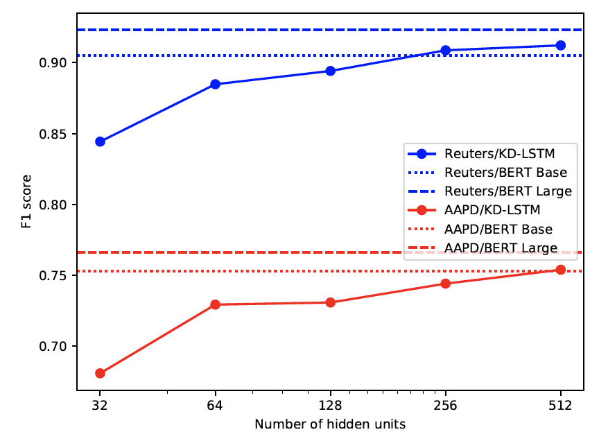
|
Exploring the Limits of Simple Learners in Knowledge Distillation for Document Classification
Ashutosh Adhikari, Achyudh Ram, Raphael Tang, William L. Hamilton, and Jimmy Lin ACL Workshop on Representation Learning for NLP. 2020. |
|
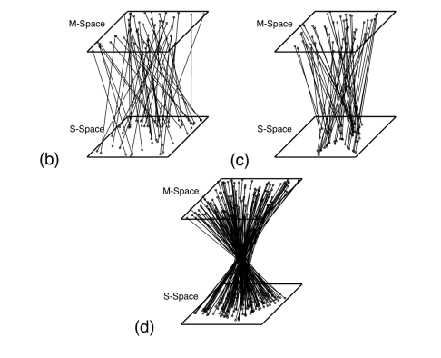
|
Exploring Structural Inductive Biases in Emergent Communication
Agnieszka Słowik, Abhinav Gupta, William L. Hamilton, Mateja Jamnik, Sean B. Holden, and Christopher Pal AAMAS Workshop on Adaptive and Learning Agents. 2020. pdf (arxiv) |
|
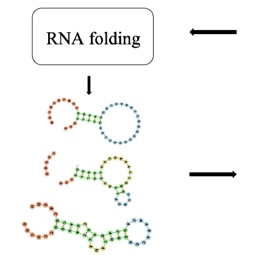
|
Graph Neural Representational Learning of RNA Secondary Structures for Predicting RNA-Protein Interactions
Zichao Yan, William L. Hamilton, and Mathieu Blanchette Proceedings of ISMB. 2020. pdf (bioarxiv) |
|
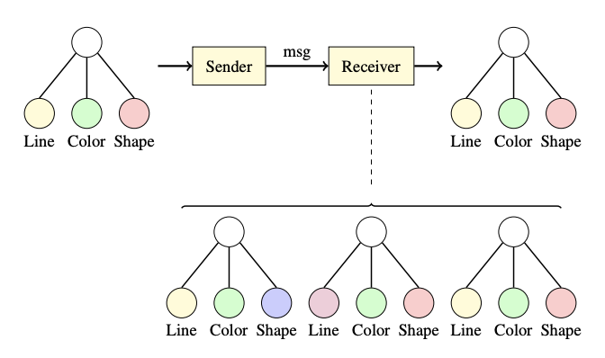
|
Towards Graph Representation Learning in Emergent Communication
Agnieszka Słowik, Abhinav Gupta, William L. Hamilton, Mateja Jamnik, and Sean B. Holden AAAI Workshop on Reinforcement Learning in Games. 2020. pdf (arxiv) |
2019

|
Meta-Graph: Few shot Link Prediction via Meta-Learning
Avishek Joey Bose, Ankit Jain, Piero Molino, and William L. Hamilton NeurIPS Graph Representation Learning Workshop 2019. pdf (arxiv) |

|
CLUTRR: A Diagnostic Benchmark for Inductive Reasoning from Text
Koustuv Sinha, Shagun Sodhani, Jin Dong, Joelle Pineau, and William L. Hamilton Proceedings of EMNLP. 2019. pdf (arxiv) |
|
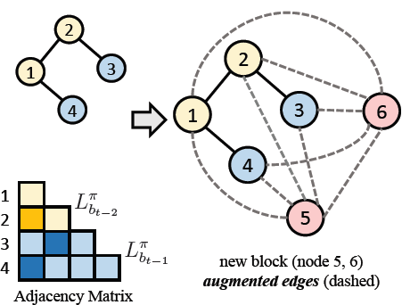
|
Efficient Graph Generation with Graph Recurrent Attention Networks
Renjie Liao, Yujia Li, Yang Song, Shenlong Wang, Charlie Nash, ,William L. Hamilton, David Duvenaud, Raquel Urtasun, and Richard S Zemel Proceedings of NeurIPS. 2019. pdf (arxiv) |

|
Neural Transfer Learning for Cry-based Diagnosis of Perinatal Asphyxia
Charles C. Onu, Jonathan Lebensold, William L. Hamilton, and Doina Precup Interspeech. 2019. |

|
Compositional Fairness Constraints for Graph Embeddings
Avishek Joey Bose and William L. Hamilton Proceedings of ICML. 2019. pdf (arxiv) |

|
Discrete Off-policy Policy Gradients Using Continuous Relaxations
Andre Cianflone, Zafarali Ahmed, Riashat Islam, Avishek Joey Bose, and William L. Hamilton Proceedings of RLDM. 2019. |
|
|
Neural Transfer Learning for Cry-based Diagnosis of Perinatal Asphyxia
Charles C. Onu, Jonathan Lebensold, William L. Hamilton, and Doina Precup ICLR AI for Social Good Workshop. 2019. |

|
Tutorial on Graph Representation Learning
William L. Hamilton and Jian Tang AAAI Tutorial Forum. 2019. slides (zip) |

|
Deep Graph Infomax
Petar Velickovic, William Fedus, William L. Hamilton, Pietro Lio, Yoshua Bengio, and R Devon Hjelm. Proceedings of ICLR. 2019. pdf (arxiv) |

|
Weisfeiler and Leman Go Neural: Higher-order Graph Neural Networks
Christoper Morris, Martin Ritzert, Matthias Fey, William L. Hamilton, Jan Eric Lenssen, Gaurav Rattan, and Martin Grohe. Proceedings of AAAI. 2019. pdf (arxiv) |
2018

|
Hierarchical Graph Representation Learning with Differentiable Pooling Jiaxuan You, Rex Ying, Christopher Morris, Xiang Ren, William L. Hamilton, Jure Leskovec. Proceedings of NeurIPS. 2018. pdf (arxiv) |

|
Embedding Logical Queries on Knowledge Graphs
William L. Hamilton, Marinka Zitnik, Payal Bajaj, Dan Jurafsky, Jure Leskovec. Proceedings of NeurIPS. 2018. pdf (arxiv) |

|
Compositional Fairness Constraints for Graph Embeddings
Joey Bose and William L. Hamilton. NeurIPS Relational Representation Learning Workshop. 2018. |
|
|
Compositional Language Understanding with Text-based Relational Reasoning
Koustuv Sinha, Shagun Sodhani, William L. Hamilton, and Joelle Pineau. NeurIPS Relational Representation Learning Workshop. 2018. |
|
|
Deep Graph Infomax
Petar Velickovic, William Fedus, William L. Hamilton, Pietro Lio, Yoshua Bengio, and R Devon Hjelm. NeurIPS Relational Representation Learning Workshop. 2018. |

|
GraphRNN: A Deep Generative Model for Graphs
Jiaxuan You, Rex Ying, Xiang Ren, William L. Hamilton, Jure Leskovec. Proceedings of ICML. 2018. pdf (arxiv) |

|
Graph Convolutional Neural Networks for Web-scale Recommender Systems
Rex Ying, Ruining He, Kaifeng Chen, Pong Eksombatchai, William L. Hamilton, Jure Leskovec. Proceedings of KDD. 2018. pdf (arxiv) |

|
Community Interaction and Conflict on the Web
Srijan Kumar, William L. Hamilton, Jure Leskovec, Dan Jurafsky. Proceedings of The Web Conference (WWW). 2018. pdf (arxiv) project website (code + data) |
2017
|
|
Representation Learning on Graphs: Methods and Applications
William L. Hamilton, Rex Ying, Jure Leskovec. IEEE Data Engineering Bulletin. 2017. |

|
Inductive Representation Learning on Large Graphs
William L. Hamilton*, Rex Ying*, Jure Leskovec. Proceedings of NeurIPS. 2017. pdf project website (code+data) |

|
Community Identity and User Engagement in a
Multi-Community Landscape Justine Zhang*, William L. Hamilton*, Cristian Danescu-Niculescu-Mizil, Jure Leskovec, Dan Jurafsky. Proceedings of ICWSM. 2017. |

|
Loyalty in Online Communities
William L. Hamilton*, Justine Zhang*, Cristian Danescu-Niculescu-Mizil, Jure Leskovec, Dan Jurafsky. Proceedings of ICWSM (short paper). 2017. |

|
Language from Police Body Camera Footage Shows Racial Disparities in Officer Respect
Rob Voigt, Nicholas P. Camp, Vinod Prabhakaran, William L. Hamilton, Rebecca C. Hetey, Camilla M. Griffiths, David Jurgens, Dan Jurafsky, and Jennifer L. Eberhardt. Proceedings of the National Academy of Science (PNAS). 2017. |
2016

|
Inducing Domain-Specific Sentiment Lexicons from Unlabeled Corpora
William L. Hamilton, Kevin Clark, Jure Leskovec, Dan Jurafsky. Proceedings of EMNLP. 2016. pdf project website (code+data) |

|
Cultural Shift or Linguistic Drift? Comparing Two Computational Models of Semantic Change
William L. Hamilton, Jure Leskovec, Dan Jurafsky. Proceedings of EMNLP. 2016. pdf project website (code+data) |

|
Learning Linguistic Descriptors of User Roles in Online Communities
Alex Wang, William L. Hamilton, Jure Leskovec. EMNLP Workshop on Computational Social Science (NLP+CSS). 2016. |
 |
Diachronic Word Embeddings Reveal Statistical Laws of Semantic Change
William L. Hamilton, Jure Leskovec, Dan Jurafsky. Proceedings of ACL. 2016. pdf project website (code+data) |

|
Predicting the Rise and Fall of Scientific Topics from Trends in their Rhetorical Framing
Vinodkumar Prabhakaran, William L. Hamilton, Dan McFarland, Dan Jurafsky. Proceedings of ACL. 2016. |
2014

|
Compressed Predictive State Representation: An Efficient Moment-Method for Sequence Prediction and Sequential Decision Making
William L. Hamilton MSc Thesis. McGill University. Canadian AI Association (CAIAC) 2014 MSc Thesis Award |

|
Methods of Moments for Learning Stochastic Languages: Unified Presentation and Empirical Comparison
Borja Balle*, William L. Hamilton*, Joelle Pineau Proceedings of ICML. 2014. |

|
Efficient Learning and Planning with Compressed Predictive States
William L. Hamilton, Mahdi Milani Fard, Joelle Pineau. Journal of Machine Learning Research (JMLR). 2014. pdf code |
2013

|
Modelling Sparse Dynamical Systems with Compressed Predictive State Representations
William L. Hamilton, Mahdi Milani Fard, Joelle Pineau. Proceedings of ICML. 2013. pdf code |
Primary Expertise --- Machine Learning Topics
To be filled.
Secondary Expertise --- Related Machine Learning Topics
To be filled.
Industrial Research Expertise --- Applications of Computer Vision
To be filled.
To fill,